図解：色彩と西洋絵画の画材
西洋絵画を形づくる三つの要素
- 支持体
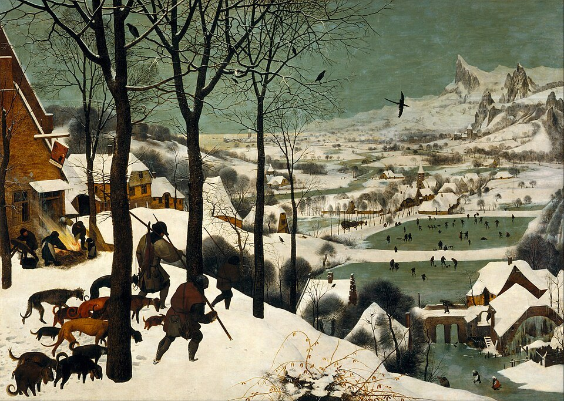
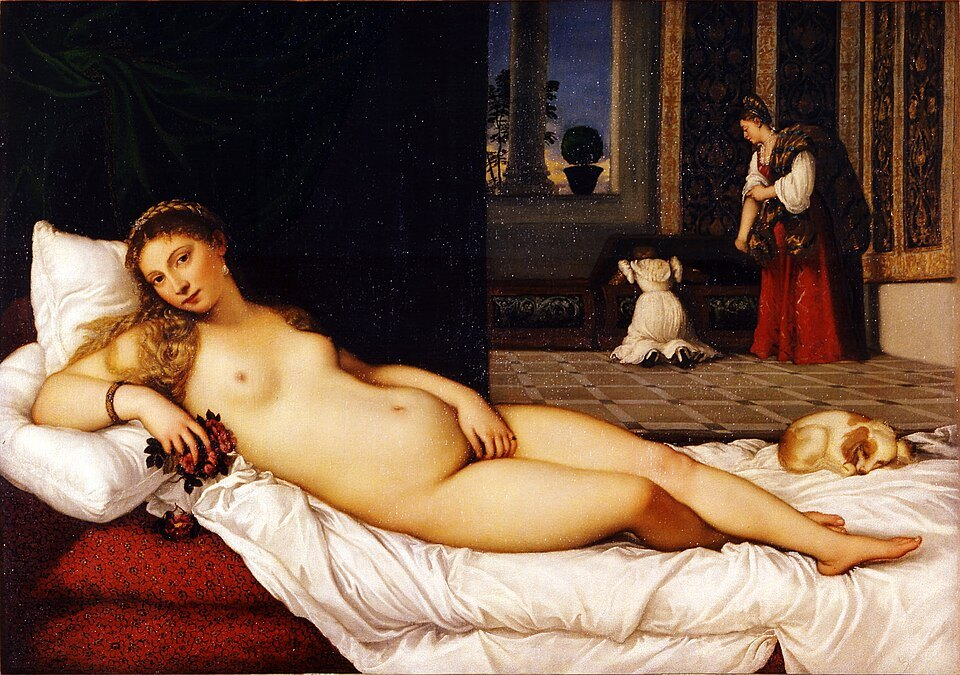
何に描くか板・漆喰層・
キャンヴァス・紙 - 色材
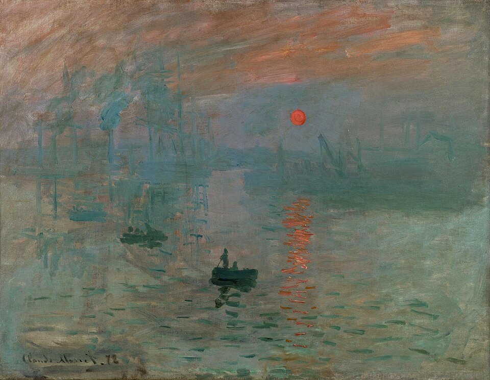
何で色を付けるか顔料＋展色剤で
絵具の種類が決まる - 描く道具
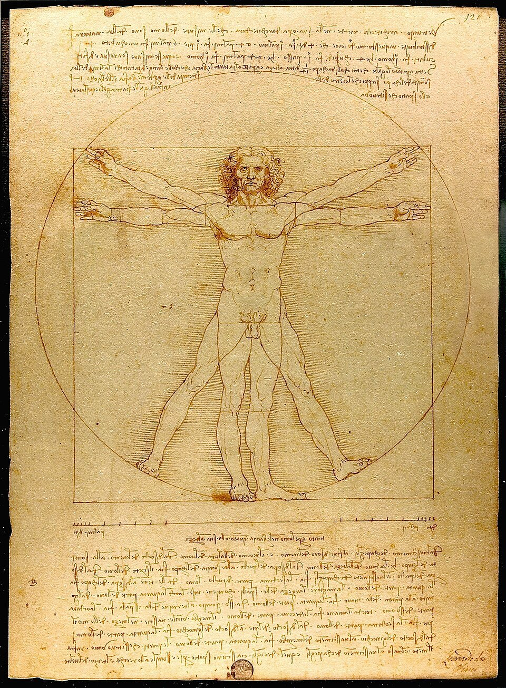
どう描くか筆・ナイフ・ペン
同じ顔料でも、展色剤（つなぎ）が変わると別の絵具になる
重要用語
色彩
- 色相しきそう赤み・黄みといった色味の違い
- 明度めいど色の明るさの度合い
- 彩度さいど色の鮮やかさの度合い
- 純色じゅんしょくそれぞれの色相の中で最も彩度が高い、鮮やかな色
- 補色ほしょく色相環で向かい合う位置にある反対色
- 減法混色げんぽうこんしょく絵具やインクなどの色材で、色を混ぜるほど暗くなっていく混色
- 加法混色かほうこんしょく光による色で、色を混ぜるほど明るくなり白に近づく混色
- 視覚混合しかくこんごう色を物理的に混ぜず、小さな点や線を並べて目の中で混ぜる混色
支持体と色材
- 支持体しじたい絵画が描かれる側の素材
- キャンヴァス木枠に麻や合成繊維の帆布を張った支持体
- 顔料がんりょう色のもとになる粉末
- 展色剤てんしょくざい顔料を練り合わせ、画面に定着させる接着剤の役割を持つ材料
- 油絵具あぶらえのぐ顔料に乾性油や樹脂を展色剤として混ぜた絵具
- テンペラ顔料を卵やカゼインなどで練った絵具
- フレスコ湿った漆喰に、水で溶いた顔料で描く壁画技法
- パステル炭酸カルシウムなどに顔料と水性の固着材（アラビアゴムなど）を練って固めたスティック状の画材
- アクリル絵具合成樹脂（アクリル樹脂）を展色剤にした20世紀の絵具
描く道具
色彩の基本
色の三要素と有彩色・無彩色
書籍 p.256色は色相・明度・彩度という三つの属性で区別できる。これを色の三要素（三属性）と呼ぶ。色相は赤み・黄み・青みといった色味の違い、明度は明るさ、彩度は鮮やかさを指す。
三要素をすべて持つ色を有彩色、白・灰色・黒のように明度だけで変化する色を無彩色という。それぞれの色相の中で最も彩度が高い色が純色である。純色に白を混ぜると明るく澄んだ明清色、黒を混ぜると暗く澄んだ暗清色になり、灰色を混ぜると濁色になる。
試験の目のつけどころ 「黒・灰色・白は明度だけで変化するので無彩色」「最も彩度の高い色が純色」「純色＋灰色＝濁色」の三つは、用語と定義をそのまま入れ替えて問われやすい。
色相環と補色
書籍 p.256主な色相（赤・青・黄・緑・紫など）を円状に等間隔で並べ、その間に中間色を置いたものを色相環という。色相環で真向かいにある色どうしが補色で、たとえば黄味のだいだいと青、赤と青緑がこれにあたる。
補色の関係にある2色を一定の割合で混ぜると、色味が打ち消し合って無彩色に近づく。反対に、補色どうしを隣り合わせて置くとコントラストが強まり、どちらの色もいっそう鮮やかに見える。これを補色対比と呼び、絵画やデザインで鮮やかさを強調するために使われてきた。印象派の画家が影に青や紫を置いたのも、日なたの黄色やだいだい色との対比を意識した工夫である。
三原色と二つの混色
書籍 p.257混色によって作ることのできない基本の色を三原色という。三原色には、絵具やインクの「色材の三原色」と、光の「色光の三原色」の二種類がある。
色材の三原色はシアン（緑みの青）、マゼンタ（赤紫）、イエロー（黄）である。色材は混ぜるほど光を吸収する部分が増えて暗くなり、3色を重ねると黒に近づく。これを減法混色（減算混合）という。一方、色光の三原色は赤（R）・緑（G）・青（B）で、光を重ねるほど明るくなり、3色が重なると白になる。これが加法混色（加算混合）で、テレビやパソコンの画面はこの仕組みで色を表示している。
色材の三原色と減法混色
色光の三原色と加法混色
スーラの点描はカラー印刷と同じ
書籍 p.257ジョルジュ・スーラの《グランド・ジャット島の日曜日の午後》は、画面のすべての形が小さな色の点の集まりで描かれている。点の一つひとつは、チューブから出したままの純色に近い。パレットの上で絵具を混ぜれば赤＋青＝紫のように多くの色を作れるが、減法混色なので色は濁って暗くなる。スーラは色を混ぜずに点として並べ、離れて見たときに目の中で色が重なるようにした。こうすると濁りの少ない混色の効果が得られる。この点描の考え方は、視覚混合（並置混合）と呼ばれる。

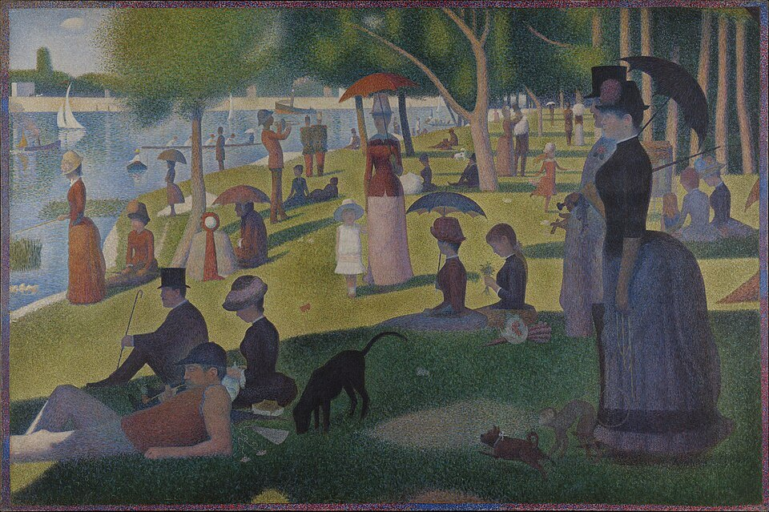
画像を拡大 ＋《グランド・ジャット島の日曜日の午後》
- 作者
- ジョルジュ・スーラ
- 制作時期
- 1884〜86年
- 所在地・所蔵
- シカゴ美術館
- 素材・形式
- 油彩・キャンヴァス
出典・画像について

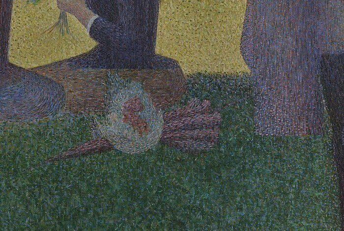
画像を拡大 ＋《グランド・ジャット島の日曜日の午後（部分拡大）》
- 作者
- ジョルジュ・スーラ
- 制作時期
- 1884〜86年
- 所在地・所蔵
- シカゴ美術館
- 素材・形式
- 油彩・キャンヴァス
出典・画像について
画面下中央、座る人物と芝生の部分を拡大した。芝生の緑の中にも黄・青・だいだいの点が混ざっている。
画像出典：Wikimedia Commons
Public domain
作品情報：画像出典・作品情報（Commons）
この原理はカラー印刷とよく似ている。カラー印刷では、紅（マゼンタ）・藍（シアン）・黄（イエロー）・黒（ブラック）の4色を小さな網点にして刷り分け、すべての色を再現する。スーラの作品には、ほかにも赤と緑、紫と黄のような色味が反対の性質の色を並べ、互いを引き立てる補色対比などの複雑な仕掛けがある。スーラとシニャックら新印象主義の流れは、W025 新印象主義で詳しく扱っている。
西洋絵画の支持体
板・漆喰層・キャンヴァス・紙
書籍 p.258絵が描かれる側の素材を支持体といい、基底材と呼ぶこともある。油彩ならキャンヴァスや板、水彩なら紙、フレスコなら壁や天井の漆喰層がよく使われる。支持体を見分けると、その作品がいつ、どんな場所のために作られたのかも見えてくる。
板は中世からテンペラや油彩によく使われた支持体で、キャンヴァスが広まるまでは油彩画の主な支持体だった。ピーテル・ブリューゲル（父）の《雪中の狩人》も、月暦画の連作として板に描かれている。漆喰層はフレスコ画の支持体である。教会や城の内部の絵画・装飾は、壁や天井に直接描かれたものが多い。ジョットの《ユダの接吻》は、パドヴァのスクロヴェーニ礼拝堂の壁を埋める連作の一場面である。

《雪中の狩人》
- 作者
- ピーテル・ブリューゲル（父）
- 制作時期
- 1565年
- 所在地・所蔵
- ウィーン美術史美術館
- 素材・形式
- 油彩・板
出典・画像について

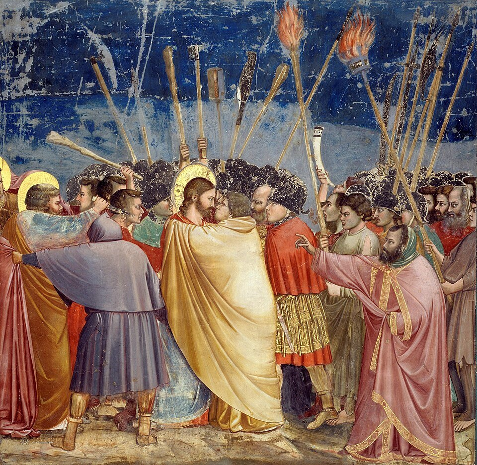
画像を拡大 ＋《ユダの接吻》
- 作者
- ジョット・ディ・ボンドーネ
- 制作時期
- 1304〜06年頃
- 所在地・所蔵
- スクロヴェーニ礼拝堂（パドヴァ）
- 素材・形式
- フレスコ（漆喰壁）
出典・画像について
キャンヴァスは油彩画で最もポピュラーな支持体で、木枠に麻や合成繊維の帆布を張って作る。布の目の粗さによって絵肌の表情も変わる。ルネサンス期に登場し、湿気が多く壁画が傷みやすいヴェネツィアで16世紀に広く普及した。軽くて巻いて運べるため大画面にも向く。ティツィアーノの《ウルビーノのヴィーナス》はその代表例である。紙は水彩画、パステル画、ペン画、版画など幅広く使われる支持体で、種類が豊富なうえ、水分の吸い込み方によって表現が変わる。テキストが紙の例に挙げるムンクの《叫び》（1893年）は、厚紙（カードボード）に油彩・テンペラ・パステルで描かれている。

《ウルビーノのヴィーナス》
- 作者
- ティツィアーノ・ヴェチェッリオ
- 制作時期
- 1538年
- 所在地・所蔵
- ウフィツィ美術館（フィレンツェ）
- 素材・形式
- 油彩・キャンヴァス
出典・画像について

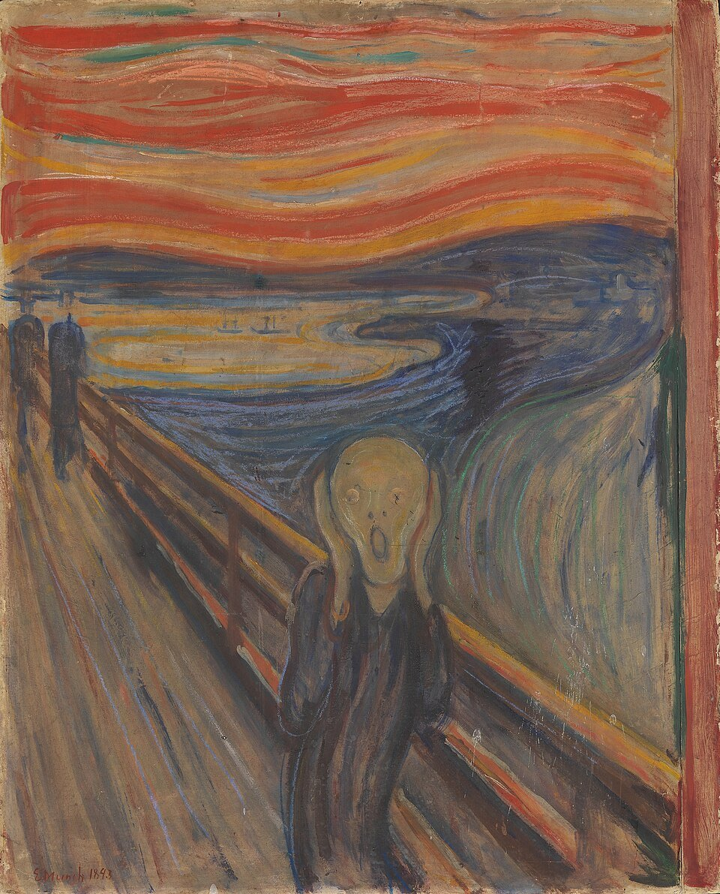
画像を拡大 ＋《叫び》
- 作者
- エドヴァルド・ムンク
- 制作時期
- 1893年
- 所在地・所蔵
- ノルウェー国立美術館（オスロ）
- 素材・形式
- 油彩・テンペラ・パステル・厚紙
出典・画像について
色材：顔料と展色剤
顔料と展色剤で絵具が決まる
書籍 p.259色材は、色を付けるために使う材料の総称で、粉末、棒状、固形、練ってチューブに入れたものまで形はさまざまである。西洋美術史に登場する作品の多くは、色のもとになる顔料と、接着剤の役目をする展色剤を混ぜ合わせた絵具で描かれている。
顔料を植物性の乾性油で練れば油絵具、アラビアゴムで練れば水彩絵具になる。同じ顔料でも、どの展色剤を使うかで絵具の種類と名前が変わるわけだ。冒頭の図解の表は、絵具と展色剤の組み合わせをまとめたものである。私たちが「絵具」と聞いて思い浮かべるチューブ入りのものは練り絵具と呼ばれ、ほかに固形やスティック状の絵具もある。
油絵具とチューブの発明
書籍 p.259油絵具は、顔料に乾性油や樹脂を展色剤として混ぜたものである。起源ははっきりしないが、15世紀半ばまでにはほとんどの技法の基礎ができあがった。ネーデルラントのファン・エイク兄弟が油彩技法を完成させたという伝承はよく知られている。油絵具は乾くのが遅いため、色を何層にも重ねたり、ぼかしたりする表現に向いている。
チューブ入り絵具が開発されたのは19世紀で、それまでは画家や弟子たちが工房で顔料と展色剤を練り合わせて作っていた。持ち運べる絵具が生まれたおかげで、印象主義の画家たちは戸外で光の移ろいを描けるようになった。印象主義の名のもとになったモネの《印象、日の出》も、すばやい筆さばきで港の朝の空気をとらえている。

《印象、日の出》
- 作者
- クロード・モネ
- 制作時期
- 1872年
- 所在地・所蔵
- マルモッタン・モネ美術館（パリ）
- 素材・形式
- 油彩・キャンヴァス
出典・画像について
テンペラ絵具
書籍 p.259テンペラ絵具は、顔料を卵やカゼインなどで練って作る。18世紀中頃までは、アラビアゴムや膠（にかわ）などを混ぜた水性絵具の総称としても使われていた。中世からルネサンス初期の板絵の多くはテンペラで描かれている。チマブーエの《サンタ・トリニタの聖母》は、金地を背景にした大きな祭壇画で、テンペラ画の典型である。
15世紀半ばに油彩画が普及すると、テンペラは衰退する。ただし、卵の中にリンシード・オイル（亜麻仁油）を混ぜたオイル・テンペラは、20世紀のウィーン幻想派などが使っている。フレスコとの違いはT002 フレスコとテンペラの違いで詳しく扱う。

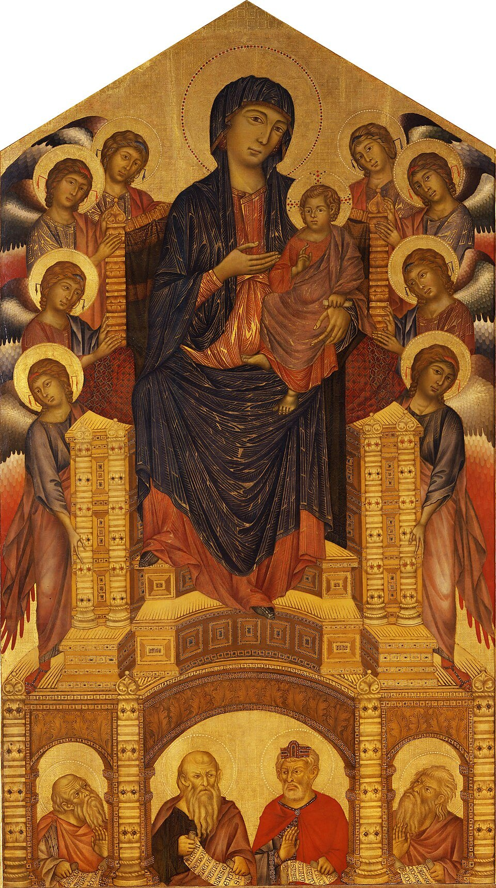
画像を拡大 ＋《サンタ・トリニタの聖母》
- 作者
- チマブーエ
- 制作時期
- 1280〜90年頃
- 所在地・所蔵
- ウフィツィ美術館（フィレンツェ）
- 素材・形式
- テンペラ・板
- 書籍の年代
- 1280年頃
出典・画像について
フレスコの色材
書籍 p.259フレスコは、水と石灰と空気中の炭酸ガスの化学変化を利用した技法である。顔料を水だけで練った色材を使い、主成分が石灰の漆喰面が湿っているうちに描く。乾く過程で石灰が炭酸カルシウムに変わり、色材が漆喰に閉じ込められて堅牢な画面になる。ラファエロがヴァチカン宮殿の「署名の間」に描いた《アテネの学堂》は、盛期ルネサンスのフレスコの代表作である。

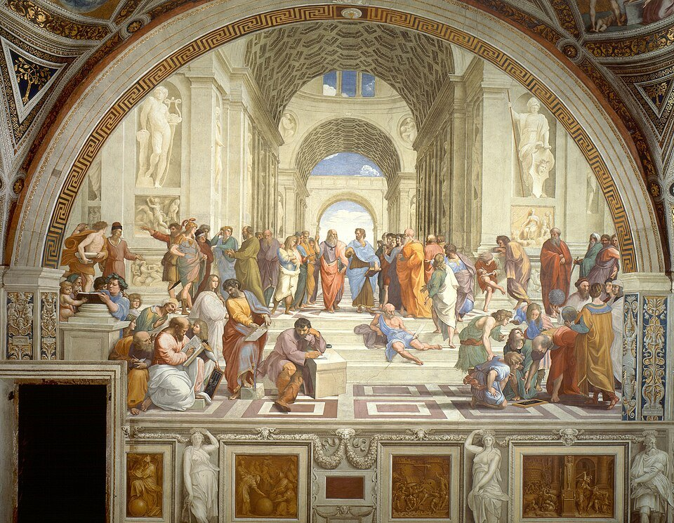
画像を拡大 ＋《アテネの学堂》
- 作者
- ラファエロ・サンティ
- 制作時期
- 1509〜10年
- 所在地・所蔵
- ヴァチカン宮殿 署名の間
- 素材・形式
- フレスコ
出典・画像について
アクリル絵具とパステル
書籍 p.259アクリル絵具は20世紀に開発された絵具で、合成樹脂を展色剤にした絵具の一般的な呼び名である。油絵具より速く乾くので重ね塗りに便利で、キャンヴァスのほか、粘土、レザー、木など使える支持体も幅広い。テキストは、薄めた絵具を生のキャンヴァスに染み込ませたモーリス・ルイスの作品を例に挙げている。
作者は1962年没で、著作権の保護期間中のため画像を掲載していない。
《アルファ・パイ》
- 作者
- モーリス・ルイス
- 制作時期
- 1960年
- 所在地・所蔵
- メトロポリタン美術館（ニューヨーク）
- 素材・形式
- アクリル（マグナ）・キャンヴァス
出典・画像について
著作権の保護期間中のため画像は掲載していません
パステルは、炭酸カルシウムなどに顔料と水性の固着材（アラビアゴムなど）を練り、スティック状に固めた画材である。17世紀半ばにドイツやイタリアで作られ、18世紀のフランスで肖像画を中心に流行した。モーリス＝カンタン・ド・ラ・トゥールの《ポンパドゥール夫人の肖像》は、等身大に近いパステル画の傑作である。19世紀にはルドンやドガもパステルを愛用した。

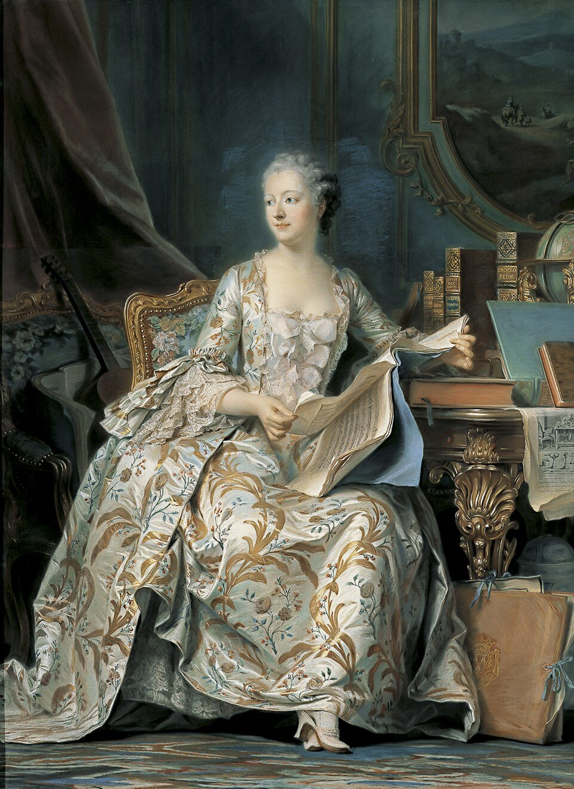
画像を拡大 ＋《ポンパドゥール夫人の肖像》
- 作者
- モーリス＝カンタン・ド・ラ・トゥール
- 制作時期
- 1748〜55年
- 所在地・所蔵
- ルーヴル美術館（パリ）
- 素材・形式
- パステル・紙
出典・画像について
描く道具
筆・ナイフ・ペン
書籍 p.260西洋画用の筆は形によって呼び名が変わり、ラウンド（丸筆）とフラット（平筆）に大きく分けられる。さらに穂先の形や穂の長さで細かく分類され、用途や表現に応じて使い分けられる。丸筆は穂先を使った描き込みや仕上げに、平筆はエッジを生かした描線や広い面を塗るのに向く。
油彩画やアクリル画では、筆のほかにペインティングナイフも使われる。絵具を画面に塗り込む、厚く塗り上げる、エッジを立てるなど、筆とは違う効果を生む道具である。ほかにパレットの上で絵具を混ぜるパレットナイフや、絵具を削り取るスクレイパーがある。テキストは、厚く塗り重ねた絵具で顔を浮かび上がらせたフォートリエの《人質》を挙げる。ここでは画像の代わりに、19世紀にナイフを多用したクールベの《波》を参考作品として示す。
作者は1964年没で、日本以外の多くの国で著作権の保護期間中のため画像を掲載していない。
《人質》
- 作者
- ジャン・フォートリエ
- 制作時期
- 1944年
- 所在地・所蔵
- —（「人質」連作の一点）
- 素材・形式
- 油彩・紙（厚塗り）
出典・画像について
著作権の保護期間中のため画像は掲載していません

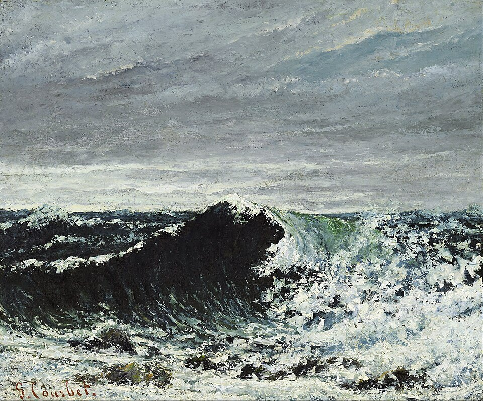
画像を拡大 ＋《波》
- 作者
- ギュスターヴ・クールベ
- 制作時期
- 1869年頃
- 所在地・所蔵
- スコットランド国立美術館（エディンバラ）
- 素材・形式
- 油彩・キャンヴァス
出典・画像について
ペンは線で表現するための道具である。ペン（pen）はラテン語で羽を意味する penna に由来し、羽ペンは15世紀から19世紀後半まで画家に好まれた。金属ペンは19世紀後半から普及し、さまざまな形のペン先がある。レオナルド・ダ・ヴィンチの《ウィトルウィウス的人体図》（人体比例図）は、ペンとインクで描かれた素描の代表例である。

《ウィトルウィウス的人体図（人体比例図）》
- 作者
- レオナルド・ダ・ヴィンチ
- 制作時期
- 1490年頃
- 所在地・所蔵
- アカデミア美術館（ヴェネツィア）
- 素材・形式
- ペン・インク・紙
出典・画像について
要点まとめ
- 色は色相・明度・彩度の三要素で区別でき、三要素を持つ有彩色と、明度だけで変化する無彩色に分かれる。
- 色相環で向かい合う色が補色。混ぜると無彩色に近づき、並べると互いを引き立てる（補色対比）。
- 色材の三原色（シアン・マゼンタ・イエロー）は混ぜるほど暗くなる減法混色、色光の三原色（赤・緑・青）は混ぜるほど明るくなる加法混色。
- スーラの点描は色を目の中で混ぜる視覚混合で、網点で色を再現するカラー印刷と同じ考え方に立つ。
- 支持体は板・漆喰層・キャンヴァス・紙。キャンヴァスは16世紀のヴェネツィアで普及した。
- 絵具は顔料と展色剤の組み合わせで決まる。卵ならテンペラ、乾性油なら油絵具、アラビアゴムならパステルや水彩。
- チューブ入り絵具は19世紀に開発され、印象主義の戸外制作を支えた。アクリル絵具は20世紀の合成樹脂の絵具。
確認問題
選択問題：0／3問回答・正解0
A. 一問一答
問1絵画が描かれる側の素材で、基底材とも呼ばれるものは何か。
答えを見る
問2純色に灰色が混ざった色を何というか。
答えを見る
問3顔料を画面に定着させる、接着剤の役割をする材料を何というか。
答えを見る
B. 4択
問4色光の三原色を重ねていくと、色はどうなるか。
→ 本文で確認（三原色と二つの混色）
問515世紀半ばに油彩画が普及すると衰退した、卵を展色剤とする絵具はどれか。
→ 本文で確認（テンペラ絵具）
問6チューブ入り絵具が開発された時期はいつか。
→ 本文で確認（油絵具とチューブの発明）
C. 図版問題
問7小さな純色の点を並べ、離れて見ると目の中で色が混ざるように描かれた作品の作者は誰か。
答えを見る
問818世紀フランスで流行した、顔料と固着材を練り固めたスティック状の画材で描かれたこの作品の画材は何か。